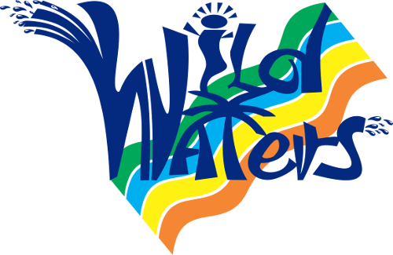

Overview
Purpose
In this website you will have all the information you need to enjoy of our rafting services. It will be easy for you to know when you can do rafting and have a good time with your loved ones.
Audience
Every person that is 12 years old or more will be able to do rafting. There will always be instructors from our company watching out to everyone that rides on a boat, but if you are a parent and want to be with your kid, you are more than welcome to join. On this website, you, as a father or legal tutor of an underage person will be able to make an appointment to come for an entire week. In the other hand, if you are coming with people of legal age you can make an appointment through this website or via phone and enjoy other activities.
Branding
Website Logo
Style Guide
Color Palette
Palette URL:
https://coolors.co/8ECAE6-219EBC-023047-FFB703-FB8500| Primary | Secondary | Accent 1 | Accent 2 |
|---|---|---|---|
| 023047 | 219EBC | FB8500 | FFB703 |
Typography
Heading Font: Righteous
Paragraph Font: Inter
Normal paragraph example
The best Whitewater Rafting in Colorado, White Water Rafting Company offers rafting on the Colorado and Roaring Fork Rivers in Glenwood Springs. Since 1974, we have been family owned and operated, rafting the Shoshone section of Glenwood Canyon and beyond.
Colored paragraph example
Trips vary from mild and great for families, to trips exclusively for physically fit and experienced rafters. No matter what type of river adventures you are seeking, White Water Rafting Company can make it happen for you.
Navigation
Site Map
Wireframes
Home